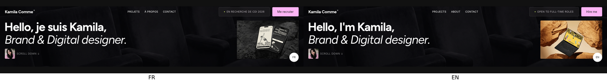
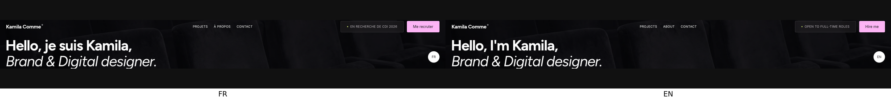
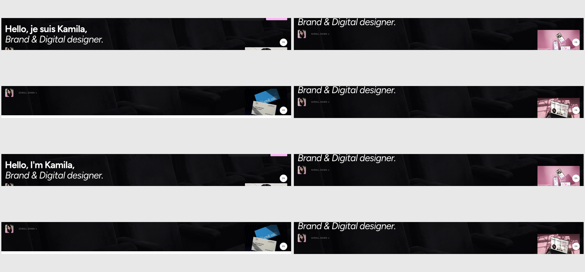
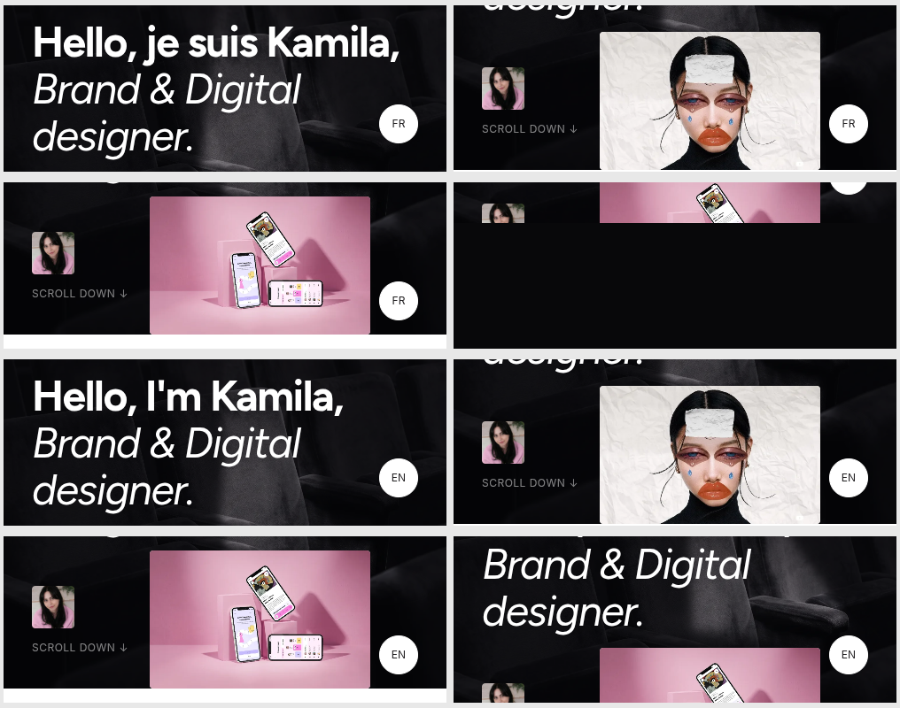
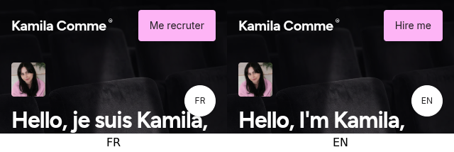
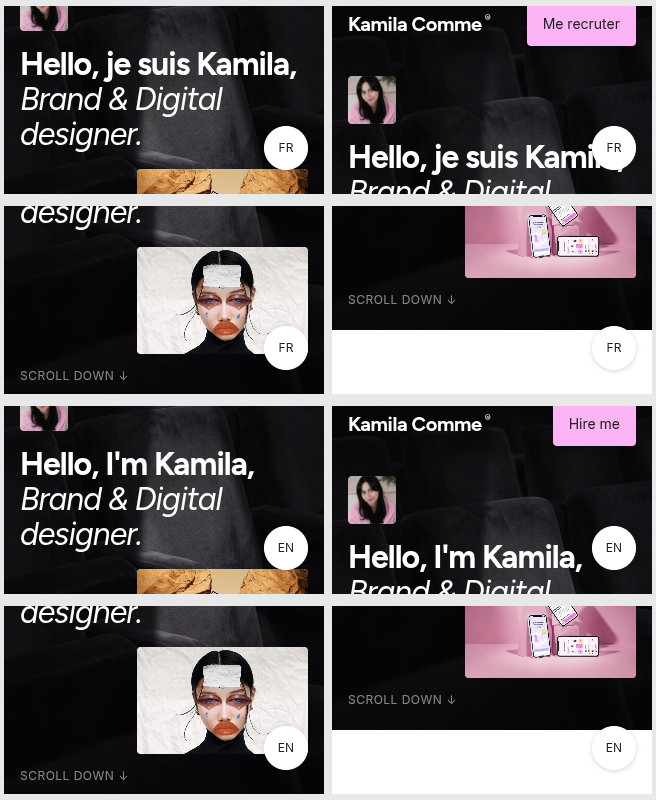

Actual Chromium captures for French and English. NORMAL compositions remain unchanged. Short heights use horizontal reflow when the existing composition fits, otherwise natural vertical scrolling. The fixed 44×44 language switcher remains unchanged; its overlap at exceptionally short heights is an accepted limitation.
Short desktop: 1440×289 — horizontal reflow

Both Hero headings, slideshow and controls fit side by side.
Very short desktop: 1707×188 — natural flow

The short-height image is reduced to 249.3×156px while retaining the existing image ratio.

Successive scroll positions: heading, portrait and cue, then slideshow.
Narrow tablet: 500×188 — natural flow
The Navbar scrolls away with the natural-flow Hero.

Each essential Hero element can be scrolled into view; Projects follows the Hero.
Minimum supported mobile width: 320×188 — natural flow


Successive scroll positions for the same Hero content in the mobile layout.